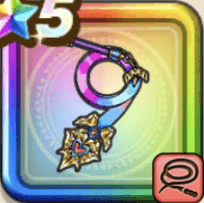

みわくのリボン
攻略班 8.0点 / しばり打ちぱふぱふブラインドショットセクシービームセクシーダイナマイト
くわしい特徴
【レベル別習得スキル】 Lv1【魔法戦士】攻撃力+5 Lv10しばり打ち（消費MP：9）敵をムチでしばり敵1体に威力180%の体技ダメージを与えたまに麻痺させる Lv15ぱふぱふ（消費MP：15）敵1体を魅了する Lv20ブラインドショット（消費MP：33）敵全体に攻・魔複合威力165%のドルマ属性体技ダメージを与え、たまに幻惑状態にする Lv30セクシービーム（消費MP：45）敵1体に攻・魔複合威力375%のドルマ属性体技ダメージを与え、たまに魅了あるいは混乱状態にする Lv35水系へのダメージ+5% Lv40ドラゴン系へのダメージ+5% Lv45攻撃力+12 Lv50セクシーダイナマイト（消費MP：14）戦闘開始時に自身の魅了成功率とすべての状態異常成功率の値だけ会心率が上がる(効果4ターン) 【限界突破スキル】 1凸スキルの斬撃・体技ダメージ+7% 2凸スキルの斬撃・体技ダメージ+7% 3凸スキルの斬撃・体技ダメージ+7% 4凸スキルの斬撃・体技ダメージ+7%